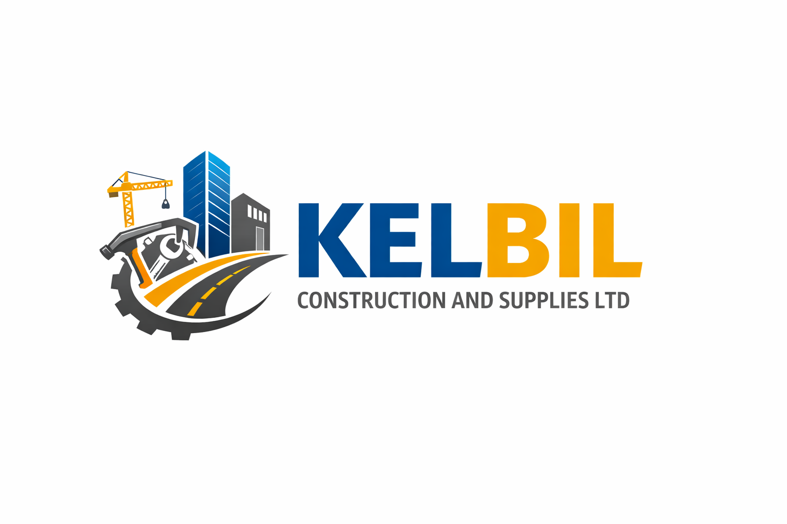

Reliable building construction, road works, paving solutions and construction material supplies across Kenya.
Get in TouchKelbil Construction and Supplies Ltd is a Kenyan-owned construction company providing building construction, road rehabilitation and maintenance, cabro and paving block installation, and supply of construction materials nationwide.
We have successfully delivered low-rise building projects in Kisii County and cabro installation works in Kilimani near Yaya Centre, Nairobi.
Phone: 0729 137 478 / 0727 620 875
Email: kelbilconstruction@gmail.com
Service Area: All over Kenya